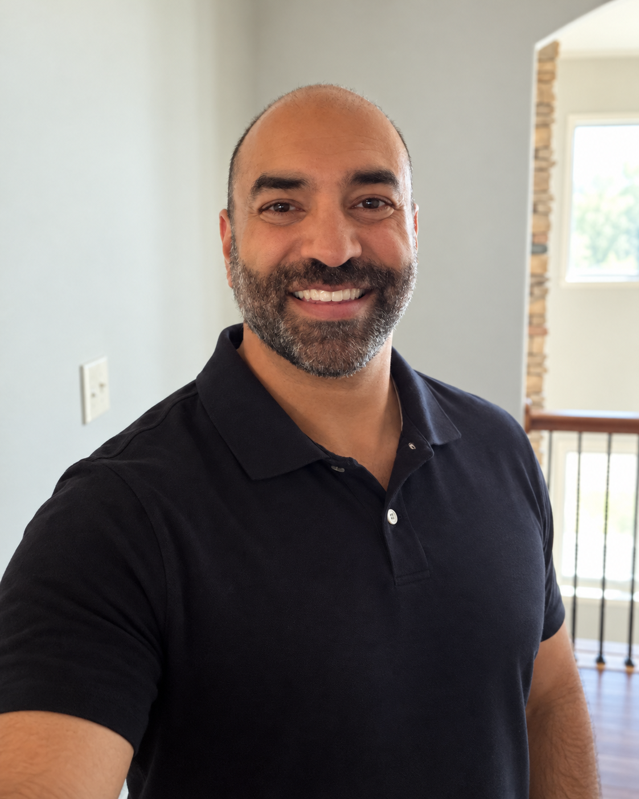

CKM prevention Cardiovascular · Kidney · Metabolic
A clinical decision-support engine for every clinician in CKM care.
Explore your patient's risk continuum over time, compare modeled prevention scenarios together, and carry the conversation into the note.
Explore with synthetic cases. Do not enter names, dates of birth, MRNs or other patient identifiers.
Start a statin? Bring her blood pressure down? Answer it in the room. Tap an intervention and RCCKM reruns the whole assessment for that scenario.
Tap an intervention and watch the picture change. Each scenario is a full engine run.
† Trial-derived treatment effect * Recalculated risk factor, not a treatment effect
Points are PREVENT's 10-year and 30-year estimates; the dotted lines only connect them. The 30-year plan value assumes the treatment effect is sustained. Synthetic demo patient; every value is RCCKM engine output.
Each step traces back to the patient’s values and the guideline behind it, including the test that was never ordered.
Same synthetic 52-year-old as the simulator. Every line is RCCKM engine output.
One synthetic patient, the way a visit actually goes: paste, apply, assess, review, and try a plan when there’s a decision to make.
Synthetic Epic SmartPhrase example. Not real patient data.
=== CARDIOVASCULAR RISK ASSESSMENT ===
Age: 58 y.o.
Sex: male
Race/Ethnicity: White (non-Hispanic)
Smoking status: Tobacco Use
Smoking status: Never
Passive exposure: Never
Smokeless tobacco: Never
Blood pressure (most recent):
BP Readings from Last 3 Encounters:
10/22/26 138/84
07/23/26 (!) 142/86
04/16/26 (!) 146/88
BMI: @LAST_BMI@
Body mass index is 35.59 kg/m².
Estimated body mass index is 35.59 kg/m² as calculated from the following:
Height as of this encounter: 1.778 m (5' 10").
Weight as of this encounter: 112.5 kg (248 lb 0.3 oz).
Wt Readings from Last 5 Encounters:
10/22/26 112.5 kg (248 lb 0.3 oz)
07/23/26 111.1 kg (244 lb 14.9 oz)
04/16/26 109.8 kg (242 lb 1.1 oz)
10/23/25 106.6 kg (235 lb 0.2 oz)
10/24/24 104.3 kg (229 lb 15.1 oz)
Clinical ASCVD: No
No history of myocardial infarction, angina, coronary revascularization, ischemic stroke, TIA, or peripheral arterial disease.
No history of heart failure or atrial fibrillation.
Family History:
Premature ASCVD in first-degree relative: Yes
Relationship: Father
Event type: Myocardial infarction (father)
Age at event: 49
Lab Results
Component Value Date
NA 138 10/22/2026
K 4.6 10/22/2026
CL 103 10/22/2026
CO2 25 10/22/2026
BUN 24 (H) 10/22/2026
CREATININE 1.45 (H) 10/22/2026
GLUCOSE 151 (H) 10/22/2026
CALCIUM 9.4 10/22/2026
PROT 7.2 10/22/2026
LABALBU 4.2 10/22/2026
BILITOT 0.6 10/22/2026
ALKPHOS 74 10/22/2026
AST 28 10/22/2026Level 3C | Converging Risk. Albuminuria plus cardiometabolic burden is actionable early kidney risk.
Persistent A2 albuminuria (UACR 126 mg/g) with eGFR 56 (G3a) plus diabetes shifts this patient from routine diabetes prevention to a cardiorenal phenotype: the kidney findings together with diabetes drive the high-intensity statin, SGLT2 inhibitor and GLP-1 recommendations, and UACR is already counted in the PREVENT full-model estimate.
Clinical Pearl · Not a substitute for clinical judgment · Example output, lightly editedRisk Continuum CKM™Level 3C | Converging Risk | CKM 3 (total CVD ≥20%) | G3aA2 | CAC Not MeasuredPREVENT ASCVD: 10y 14.5% (High), 30y 37.1% (High) | Total CVD: 10y 22.9%, 30y 53.7% Assessment (ICD-10):- T2DM with CKD G3aA2 (E11.22, N18.31)- Primary hypertension (I10)- Elevated lipoprotein(a) (E78.41)- Hypertriglyceridemia (E78.1)- Obesity, BMI 35.6 (E66.9, Z68.35)- Metabolic dysfunction-associated steatotic liver disease (K76.0)- Obstructive sleep apnea (G47.33) Risk Drivers:ApoB 116 mg/dL | T2DM with CKD G3aA2 | Lp(a) 168 nmol/L | hsCRP 2.8 mg/L (dated 2026-10-22; 10 days before assessment; single measurement; confirm persistence/context) Management Considerations:- Lipids: Currently receiving atorvastatin 20 mg. Intensify to high-intensity or maximally tolerated statin therapy based on the independent risk indication. LDL-C 126; target <70. If still above goal on maximally tolerated statin, consider add-on nonstatin therapy.- Plaque: Consider CAC.- Kidney: Optimize kidney protection. SGLT2i beneficial if no contraindication (T2D with CKD; eGFR 56; UACR 126). ACEi/ARB active. G3a/A2 kidney-risk pattern.- BP: Confirm BP; optimize RAAS if persistent. Current BP 138/84 mmHg.- Metabolic: Diabetes control worsening. A1c 7.5%, worsened from 6.4%; above goal; on current therapy; review regimen; Recommend GLP-1/GLP-1-GIP for glycemic, cardiovascular, cardiorenal, and weight benefits.- Aspirin: Not indicated.
† Trial-derived treatment effect * Recalculated risk factor, not a treatment effect
High-intensity statin and systolic BP 120 mmHg: modeled PREVENT ASCVD 10y 14.5% → 8.3%, 30y 37.1% → 22.7% (trial-based estimate; not a treatment order).
Synthetic patient, 58M, Level 3C (Converging Risk). The simulator above uses a different patient, 52F, Level 3B (Emerging Risk Trajectory). Each sample keeps its own engine-assigned Level. Modeled plan estimates are for clinician review, not treatment orders.
of U.S. adults meet criteria for CKM syndrome. Nearly half are at stage 2, with metabolic risk factors or kidney disease, where prevention has the most room to work.
Aggarwal et al., JAMA, 2024is the median primary care visit. The evidence is ready; bringing the whole cardiometabolic picture together in that time is the opportunity.
Neprash et al., Medical Care, 2021of U.S. adults 40–75 without heart disease are eligible for cholesterol-lowering therapy, and about 23% take it. A clear risk conversation at the point of care can help close that gap.
Alexander et al., J Gen Intern Med, 2025Risk Continuum helps you tell it.
A1c increased from 5.2% to 6.1%.
Synthetic demo patient, dated results from the chart text. Trends add context; they never change the level, PREVENT or the actions on their own.
Patients decide better when they can see their own risk and what each option would change. RCCKM gives you something to point at, a way to try options together, and a record of what you talked about.
"About 2 in 100 similar patients," with a 100-person array at 10 and 30 years.
Today and the plan on one timeline, out to age 82 for this patient.
"Risk Reduction Discussed" goes in the note with the numbers you shared.
A points tally, not an event probability. The score is the sum of the points shown.
One block per risk signal, so you see what’s driving risk at a glance.
“This is how I stack risk factors in my mind, made visible.”Shereef El-Ibiary, MD
Synthetic demo patients; contributors and points are RCCKM engine output.
Four synthetic demo patients, each with its own engine-generated note. RCCKM Levels describe the clinical pattern; PREVENT supplies the probability. Read the Level guide.
Sort out which intervention to prioritize in complex patients.
Follow each patient's trajectory visit after visit.
See the metabolic, kidney, lipid and plaque drivers upstream.
Kidney function, albuminuria and CV risk in one frame.
Diabetes care with heart and kidney risk in view.
Share the modeled benefit, review the note, and leave with a patient handout.

Shereef El-Ibiary, MD
Internal Medicine · Primary Care · Hospital Medicine · Population Health
We are at a remarkable moment in medicine. Advances in technology, treatments, and clinical evidence are opening new possibilities for prevention. Our patients’ records hold valuable information about their health and how it is changing. The opportunity now is to bring it all together, efficiently and meaningfully, at the point of care and beyond.
After nearly two decades caring for patients across primary care, hospital medicine, and population health, I built Risk Continuum CKM to help put that opportunity into practice. RCCKM connects a patient’s history, clinical findings, and trends with relevant evidence, helping clinicians see the whole picture and turn that understanding into an individualized approach to prevention.
My goal is to make comprehensive prevention easier to deliver in everyday practice. By bringing the information and evidence together, we can support clinician judgment, strengthen conversations with patients, and extend our attention from today’s decisions to long-term health.
Reconcile. Curate. Care.
"I wanted a way to figure out patients' cardiovascular risk quickly, and catch the signals to alter course well before events, using the routine data we already have or can easily get."
More birthdays. More weddings. More graduations.
Explore the science, see how scenarios are built, and discover the next steps for clinical evaluation.
Read the FAQsEach Level names a clinical pattern. The guide explains 3A, 3B and 3C alongside the other Levels and the separate CKM, KDIGO and PREVENT frameworks.
Read how the points tally makes its contributors visible and how to interpret it alongside PREVENT.
Explore options together using trial-derived LDL-C and blood pressure effects and supported PREVENT recalculations, with the methods in view.
Published equations and clinical frameworks underpin the assessment. Software checks and synthetic-case testing support development, with independent clinical evaluation as the next step.
Create a free account and run a synthetic case in minutes, or talk with us about a pilot for your practice.
Explore with synthetic cases. Do not enter names, dates of birth, MRNs or other patient identifiers.
We're seeking practices, specialty groups and health systems to evaluate RCCKM's simulator, clinical note and patient handout.
For platform teams, let's explore how the engine could support your existing workflow.
Start with a 15-minute synthetic-case demonstration. Clinical pilots and integrations require separate institutional approvals and agreements.
Send a note, or email shereef@riskcontinuum.health.